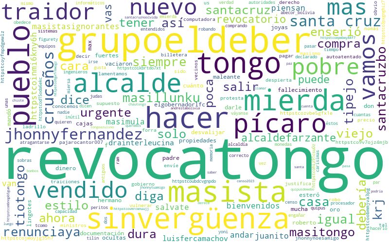

Tablas obtenidas
A continuación se describirá las tablas generadas.
Tabla de tweets en espacio 3D
Obtenida al aplicar el modelo BERT preentrenado para español a los tweets, y reducirlos a 3 dimensiones.
| texto-original | x | y | z | |
|---|---|---|---|---|
| 0 | Pobres #MasistasIgnorantes piensan que por andar con #TioTongo, su nuevo #MasiMula #MasiLlunku, van a ser bienvenidos en #SantaCruzBo 🤡🤡🤡\nIgual le vamos a hacer #RevocaTongo a Juanito (salvate y #RenunciaYa) https://t.co/inmi6knY6h | -0.919580 | -0.824795 | -0.407660 |
| 1 | @DraInterleucina @LuisFerCamachoV @ElgobernadorLfc Hay que darle #RevocaTongo al tipejo | -1.109628 | 1.176379 | 0.033446 |
| 2 | El tongo siempre fue maleante. Mandó a desvalijar la casa de su padre en cuánto se esteró de su fallecimiento. Vaciaron 2 cajas fuertes con mucho dinero, lingotes de Oro, joyas y mucha documentación de propiedades de don Max F. Todo a ocultas de su hermano Roberto. #RevocaTongo https://t.co/zVBe5Gfx1E | 6.045797 | -0.501563 | 0.545565 |
Al hacer clustering se generó la grafica 3_elbow-method.png con el propósito de aplicar el método elbow

La gráfica 3_count_elements_in_clusters.png muestra la cantidad de elementos en cada cluster al aplicar el algoritmo de clustering a nuestra tabla.
El archivo 3d-scatter-plot.html es una visualización interactiva de los puntos en el espacio tridimensional.
Tabla de análisis de sentimientos
Obtenida al aplicar un análisis de sentimientos a los tweets.
| texto-original | compound_nltk | polarity_tb | subjectivity_tb | |
|---|---|---|---|---|
| 0 | Pobres #MasistasIgnorantes piensan que por andar con #TioTongo, su nuevo #MasiMula #MasiLlunku, van a ser bienvenidos en #SantaCruzBo 🤡🤡🤡\nIgual le vamos a hacer #RevocaTongo a Juanito (salvate y #RenunciaYa) https://t.co/inmi6knY6h | -0.0258 | 0.178788 | 0.651515 |
| 3 | @DraInterleucina @LuisFerCamachoV @ElgobernadorLfc Hay que darle #RevocaTongo al tipejo | 0.0000 | 0.000000 | 0.000000 |
| 4 | El tongo siempre fue maleante. Mandó a desvalijar la casa de su padre en cuánto se esteró de su fallecimiento. Vaciaron 2 cajas fuertes con mucho dinero, lingotes de Oro, joyas y mucha documentación de propiedades de don Max F. Todo a ocultas de su hermano Roberto. #RevocaTongo https://t.co/zVBe5Gfx1E | -0.8625 | -0.583333 | 0.666667 |
La siguiente tabla es una descripción de la tabla obtenida.
| compound_nltk | polarity_tb | subjectivity_tb | |
|---|---|---|---|
| count | 36.000000 | 36.000000 | 36.00000 |
| mean | -0.129739 | -0.010959 | 0.24134 |
| min | -0.931300 | -0.583333 | 0.00000 |
| max | 0.806800 | 0.500000 | 1.00000 |
Al analizar el texto, se generó una nube de palabras wordcloud.png.
